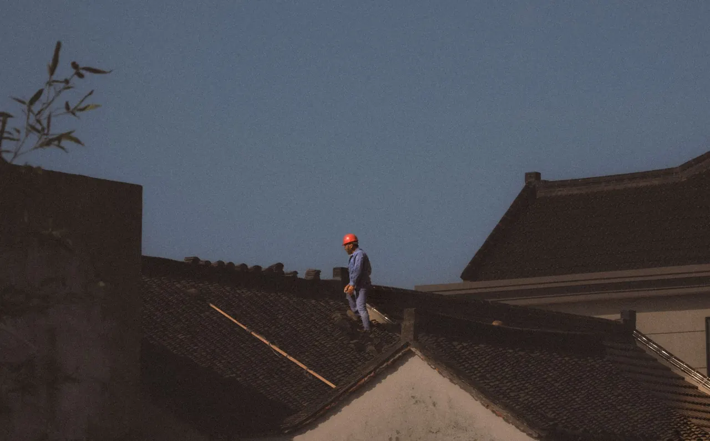
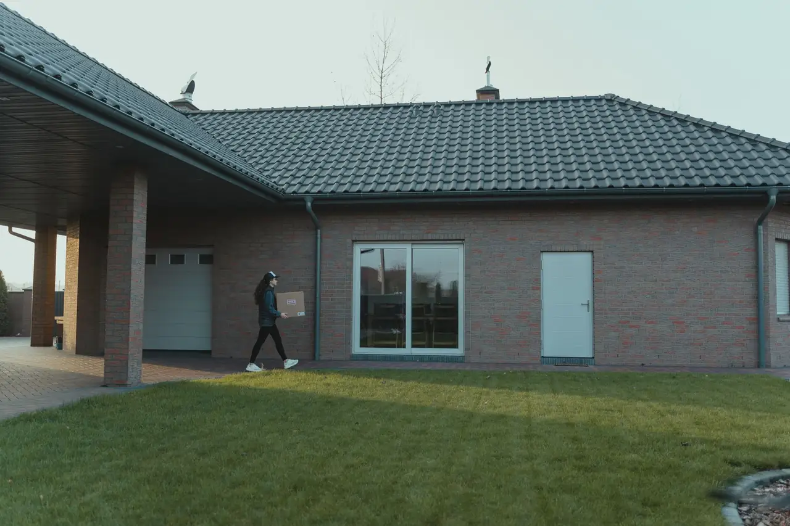
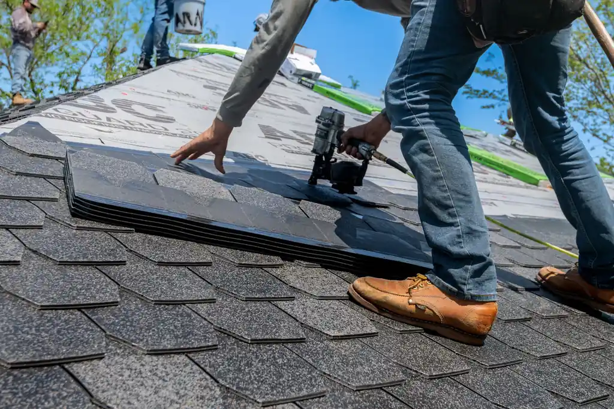
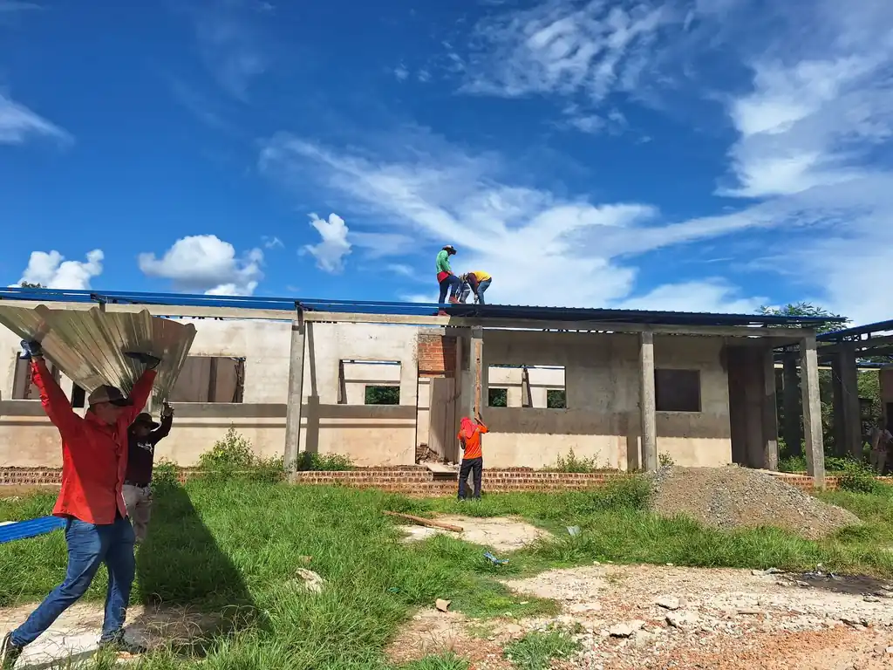
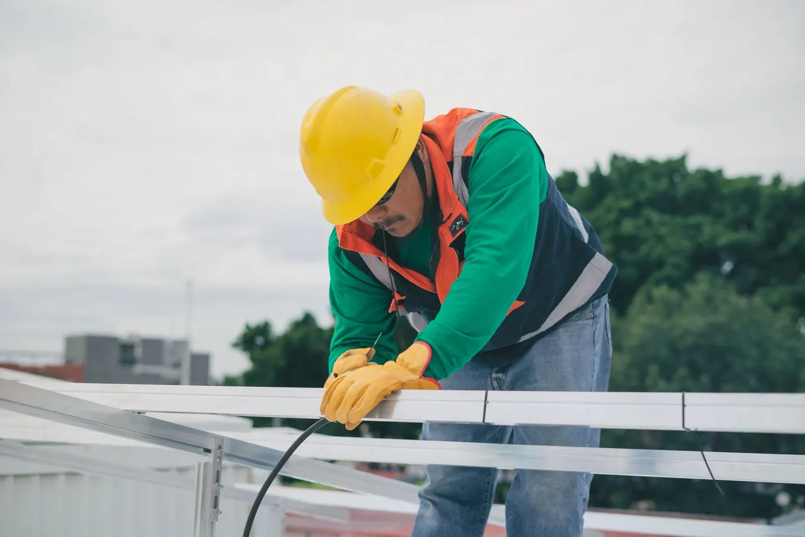

Focused arrival windows
Useful updates and clear arrival timing.

Shingle Roofing Services Panama City FL is essential for homeowners needing durable and affordable roofing solutions. Our team specializes in Panama City shingle roofing, ensuring your home withstands the local climate while enhancing its curb appeal.
Useful updates and clear arrival timing.
Review the approach and price before deciding.
Equipped vehicles and respectful cleanup.
Neighbors serving neighbors with follow-through.
Our shingle roofing services cover everything from installation to maintenance. We ensure your roof meets local codes and is built to last.
Before installation, we conduct a thorough roof inspection to identify any underlying issues that need addressing.
We use top brands like GAF and Owens Corning for all shingle roofing projects, ensuring durability and performance.
Our experienced team handles the installation process, guaranteeing compliance with Florida Building Code standards.
After the job is done, we clean up the worksite, ensuring no debris is left behind and your property is in pristine condition.
Share what is happening and receive a clear next step from the local team.
Shingle Roofing Services Panama City FL involves the installation, repair, and maintenance of asphalt shingles on residential and commercial roofs. This service is vital for protecting your property from weather elements and ensuring structural integrity.
Local Panama City customers need shingle roofing services due to the area's humid subtropical climate, which can lead to moss growth and roof leaks. Our affordable shingle roofing Panama City solutions address these challenges effectively, providing long-lasting protection.

We begin with a free consultation to assess your roofing needs. Our experts will evaluate your current roof's condition and discuss options tailored to your budget.
After the consultation, we provide a detailed estimate outlining the scope of work, materials needed, and pricing. This transparency helps you make informed decisions.
Before starting, our team conducts safety checks and prepares the site. We use tools like roofing nailers and safety harnesses to ensure a safe working environment.
The installation of asphalt shingles typically takes 1-3 days, depending on the roof size. Our skilled crew ensures proper alignment and sealing to prevent leaks.
Once installation is complete, we conduct a final inspection to ensure everything meets Florida Building Code Compliance. We also clean up the site, leaving your property pristine.

Used for quick and secure installation of shingles, ensuring proper fastening.
This tool helps in cutting shingles to fit around vents and edges accurately.
Essential for protecting our team while working at heights, ensuring safety on the job.
Used for driving nails into shingles, ensuring a tight fit and preventing leaks.
We adhere to local building codes, ensuring all installations meet safety and quality standards.
Our team follows industry best practices for shingle installation, minimizing the risk of future issues.
We recommend regular maintenance checks to identify and address potential problems before they escalate.

Our team assesses the damage and provides quick repairs to restore your roof's integrity. This timely service prevents further damage and protects your home from leaks.
We perform a thorough inspection and recommend shingle replacement if necessary. Replacing old shingles enhances your home's appearance and prevents leaks.
Our shingle roofing services can improve curb appeal and increase property value. A new roof attracts potential buyers and can lead to a quicker sale.
Shingle roofing services in Panama City are tailored to meet the unique needs of local homeowners. Given the area's humid subtropical climate, roofs are susceptible to moss growth and leaks. Our team uses high-quality materials like asphalt shingles from brands such as GAF and Owens Corning to ensure durability. We also comply with Florida Building Code standards to guarantee safety and quality. Regular inspections and maintenance are crucial, particularly after the rainy season, to keep roofs in optimal condition.
Known for its older homes, many of which require shingle replacements to maintain structural integrity.
This area has many new constructions that benefit from our modern shingle roofing solutions.
Residents often face issues with moss growth due to the proximity to water bodies, making our services vital.
This can lead to faster deterioration of roofing materials if not properly maintained.
Increased risk of leaks and water damage, necessitating regular inspections and prompt repairs.
The roof had missing shingles and visible water damage, which compromised the home's structural integrity.
After replacing the shingles, the roof was fully restored, with no leaks and improved aesthetics. The homeowner reported a 30% increase in energy efficiency.
Maintenance: Regular inspections every 6 months to ensure shingles remain intact and functional.
The roof was covered in moss, trapping moisture and causing potential leaks.
After professional moss removal, the shingles were clean, and the roof was treated to prevent future growth.
Maintenance: Annual cleaning and maintenance to prevent moss and algae buildup.
A severe storm caused significant leaks in the roof, leading to interior water damage.
After our emergency repair services, the roof was sealed, preventing further leaks and damage.
Maintenance: Regular post-storm inspections to catch any potential issues early.
Shingle roofing services address several common roofing issues faced by homeowners in Panama City.
Ignoring roof leaks can lead to significant water damage and costly repairs inside your home. Our team quickly identifies and repairs leaks, ensuring your home remains dry and protected from the elements.
Curling or missing shingles can compromise your roof's integrity, leading to further damage and higher repair costs. We replace damaged shingles and ensure proper installation to prevent future issues.
Moss can trap moisture, leading to shingle deterioration and leaks if not addressed promptly. Our services include moss and algae removal, keeping your roof clean and extending its lifespan.
$180 - $450 depending on scope
Pricing for shingle roofing services in Panama City typically ranges from $180 to $450 per square, depending on factors like material quality and roof size. Additional costs may arise from repairs needed before installation. The value of investing in quality shingle roofing is evident in the long-term protection it provides against local weather conditions.
Investing in quality shingle roofing services ensures your home is protected from the elements, ultimately saving you money on repairs.
Higher-quality shingles may cost more but offer better durability and longevity.
Larger roofs will naturally incur higher installation costs due to more materials and labor.
Roofs that are harder to access may require more time and specialized equipment, increasing labor costs.

With over 15 years of experience in the roofing industry, we have honed our skills in providing top-quality shingle roofing services. Our team is NRCA Certified and trained in the latest techniques and materials.
Shingle roofing offers affordability, durability, and a variety of styles. With proper installation, asphalt shingles can last 20-30 years, making them an excellent investment for homeowners.
Typically, shingle roofing lasts between 20 to 30 years, depending on the quality of materials and the installation process. Regular maintenance can extend its lifespan.
We recommend asphalt shingles from trusted brands like GAF and Owens Corning. These materials are designed to withstand the local climate and provide excellent durability.
The cost of shingle roofing services in Panama City typically ranges from $180 to $450 per square, depending on the materials used and the complexity of the installation.
Not seeing your question? Our local team can help you understand urgency, scheduling and what to expect.
Ask the local teamWe invite you to reach out for any roofing needs. Our team is available to assist you promptly, ensuring a quick response.